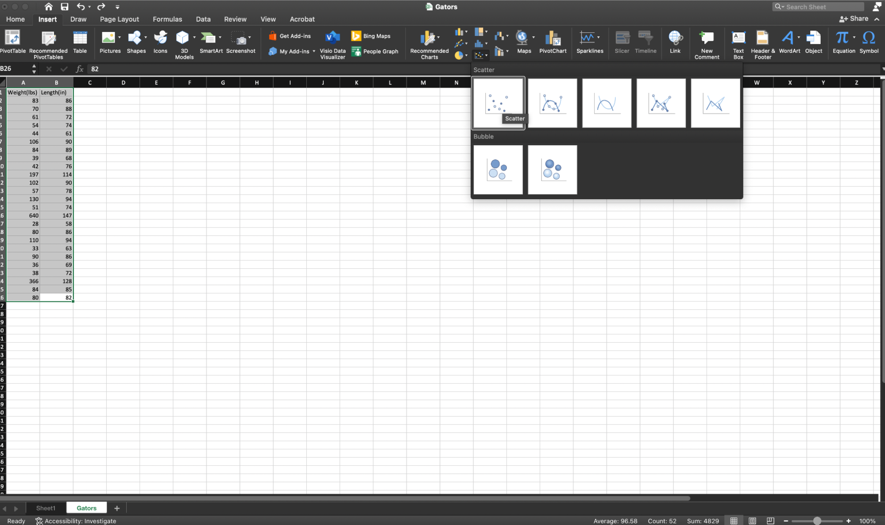
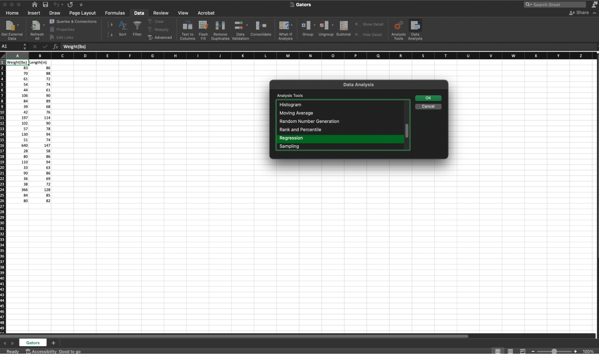
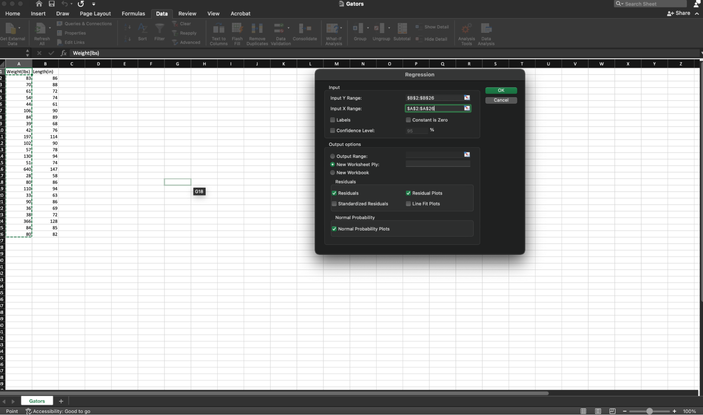
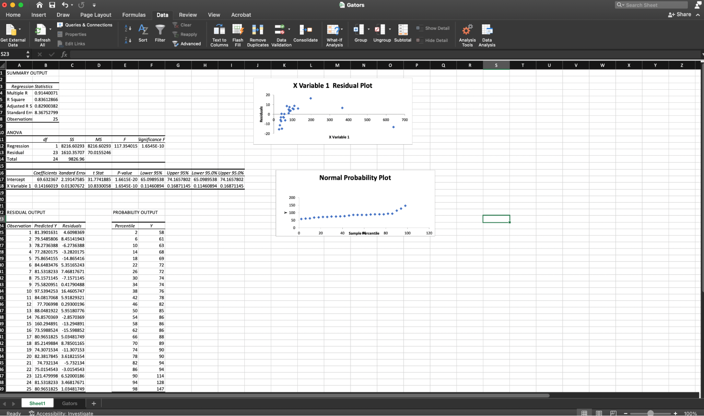
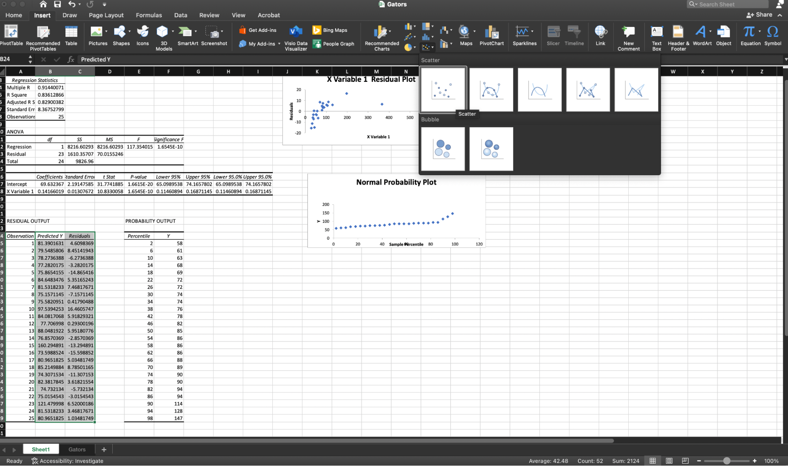

Week 3 In-Class Worksheet
Hints for Excel
Create a scatterplot of the data

Create a SLR model


View and interpret the resulting information about your SLR model

Create a scatter plot of the residuals vs the fitted values
